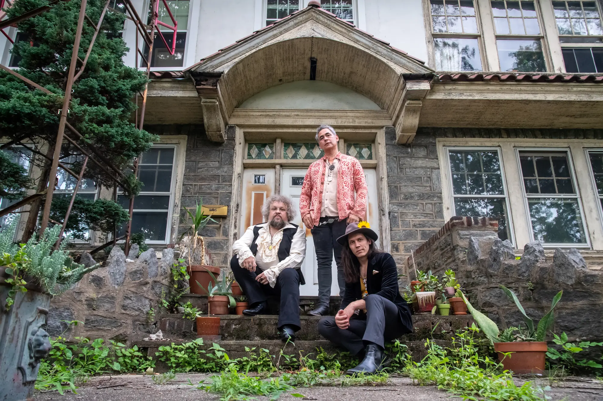
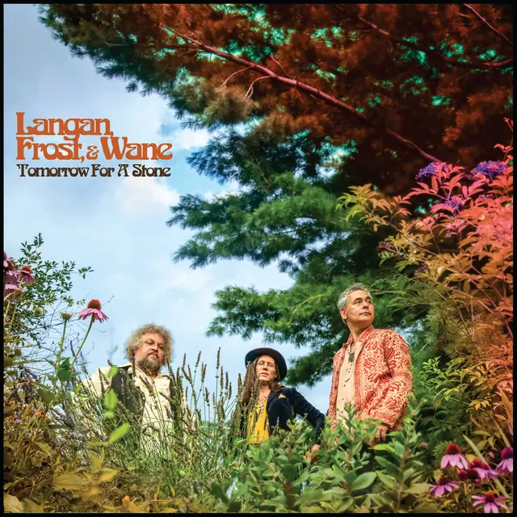
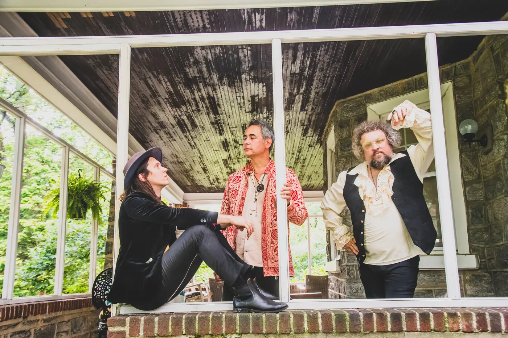
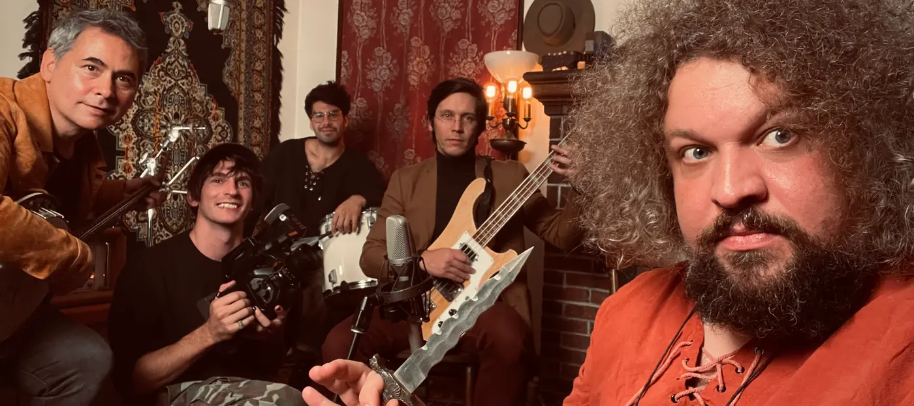
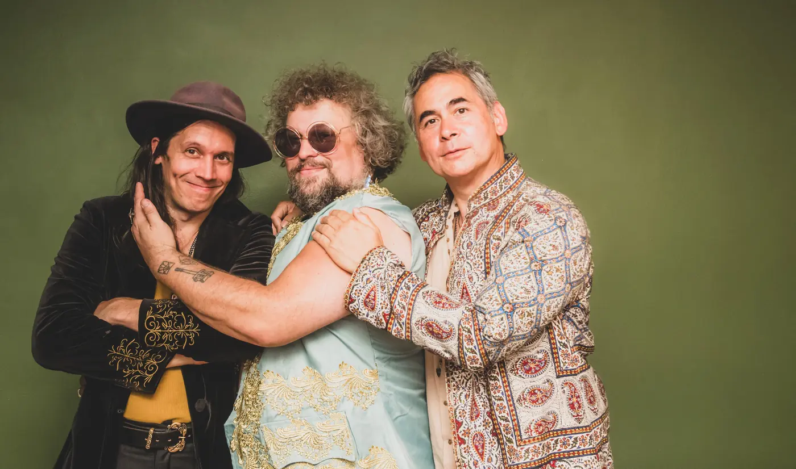
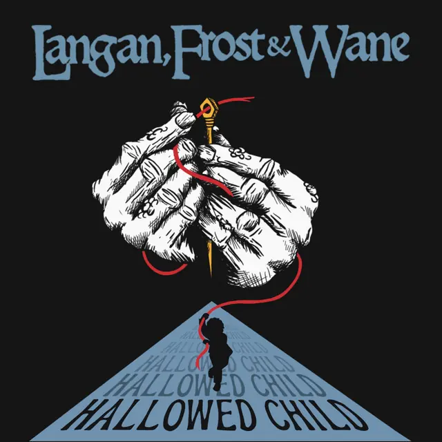
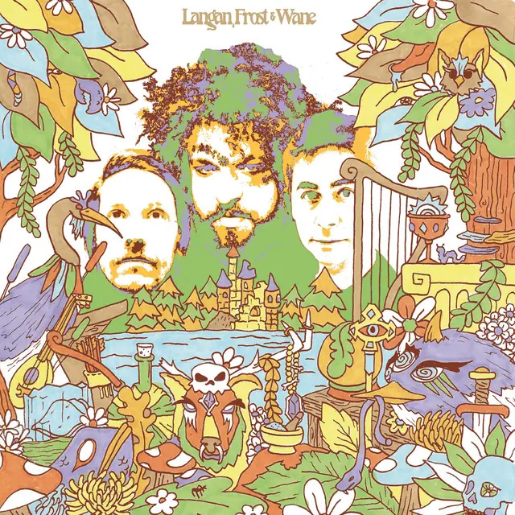
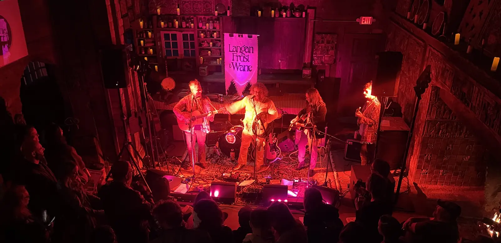

Tomorrow for a Stone
LP · Goldstar Recordings · 2026 · 12 songs

Fantasy-folk · Acid folk · West Philadelphia
A folk trio that sounds like a lost recording of the late sixties, made in a house beside an overgrown graveyard.

The new album · Goldstar Recordings · 9 October 2026
The second full-length record, whittled down from two years of studio recordings and experiment to a dozen songs. It runs almost like a history of the hippie years: it opens in mid-sixties British folk-pop, all merry trains, wine and daisy chains, and slowly descends into the acid fallout of the early seventies.
It ends with The Lark, a ten-minute odyssey that drags the listener down to hell, only to be reborn by the grace of the common meadowlark. Russell Higbee of Modest Mouse plays harp on the record.
7 N Main St, Lambertville, New Jersey · with Na’Bodach
Doors 7:30 pm, music 8–10 pm · $20
Philadelphia, Pennsylvania · Tomorrow for a Stone release night
No dates on the calendar just now. Follow the band on Facebook to hear of the next one.
Langan, Frost & Wane is, at heart, a folk trio, drawn to the fringe of the sixties folk revival: the Incredible String Band, Syd Barrett, Donovan. Brian Langan, Robert James Frost and Nam Wayne make their records themselves, on late sixties outboard gear, in a house that backs onto a vast overgrown graveyard in West Philadelphia.
It began as a side road. Langan sang in the pop and boogie of the SW!MS and Needle Points; Frost played in the heavier, punkier Meddlesome Bells and Dark Web, and ran Bells Records, a small studio and field-recording label. Neither had an outlet for the folk they loved, so they made one, and Frost brought in Wane as the third voice. The three settled it after an evening of impromptu songwriting.
Close vocal harmony and fingerpicked guitar sit among oud, harp, setar, bouzouki, mandolin, harpsichord, penny whistle, flute and mellotron, with found sound and instruments from the Middle and Far East, India, the Mediterranean and Appalachia. It turns, kaleidoscope fashion, from fun and flowery to poetic and arcane.



LP · Goldstar Recordings · 2026 · 12 songs

Single · 2025

LP · Goldstar Recordings · 2021 · 15 songs
King Laughter, the first single from the 2021 debut, in fur and lute in the woods.
Falcon Ridge, live
Live at the Moravian Tileworks, Doylestown
Soundcheck at Dharma Bums
Johnny Brenda’s, 20 April 2023
Langan Frost & Wane has achieved something truly remarkable… serf-like attire only adds to the far-out allure of their hypnotic music.
Glide Magazine
At once autumnal and whimsical… ‘Alchemist of Hazy Row’ turns base folk into pure gold.
The Midlands Rocks
Infused with freshness and delicacy, never one that sounds as though it’s a musical history project to be preserved in amber.
Folking.com
The fact that it was recorded in 2021, yet sounds so authentic, is a thing to marvel.
Bernard Zuel
Very, very well done.
Music Republic Magazine
Genius!
Chris DiPinto, WXPN’s Ears We Trust
Championed by Shindig!, Prog and Glide Magazine.

For bookings and features, write to Brian at Krakenfeed@gmail.com.
The press kit, the LP and the mailing list live at langanfrostandwane.com.